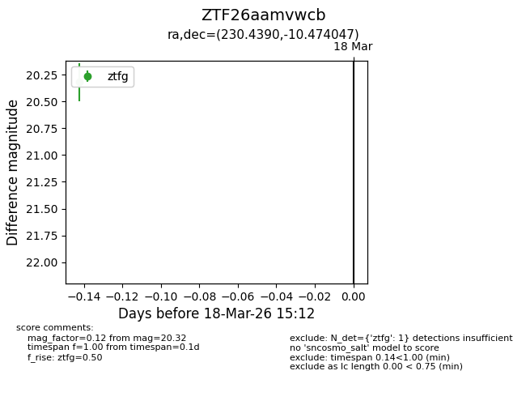
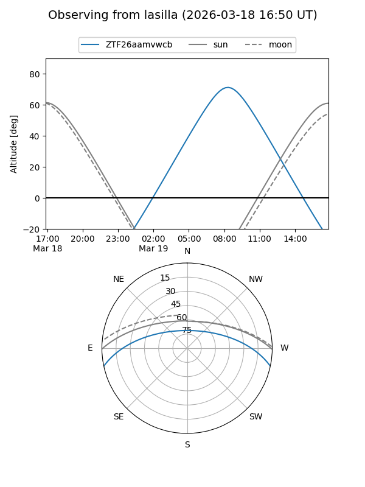
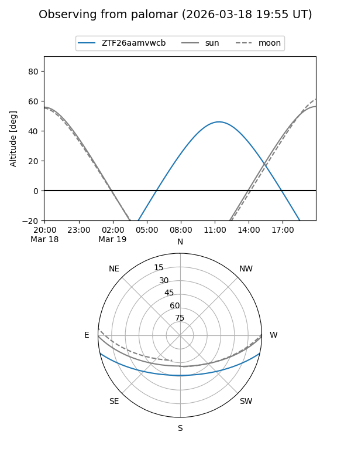

ZTF26aamvwcb
Target ZTF26aamvwcb at 2026-03-18 15:14
Aliases and brokers:
FINK: link
Lasair: link
ALeRCE: link
alt names
ZTF26aamvwcb (ztf,fink_ztf)
Coordinates:
equatorial (ra, dec) = 230.4390,-10.47405
equatorial (HMS+DMS) = 15:21:45.35,-10:28:26.57
galactic (l, b) = (352.1597,+37.63845)
Flags:
Photometry:
last ztfg=20.32
1 ztfg detections
Lightcurve

Visibility


Additional plots